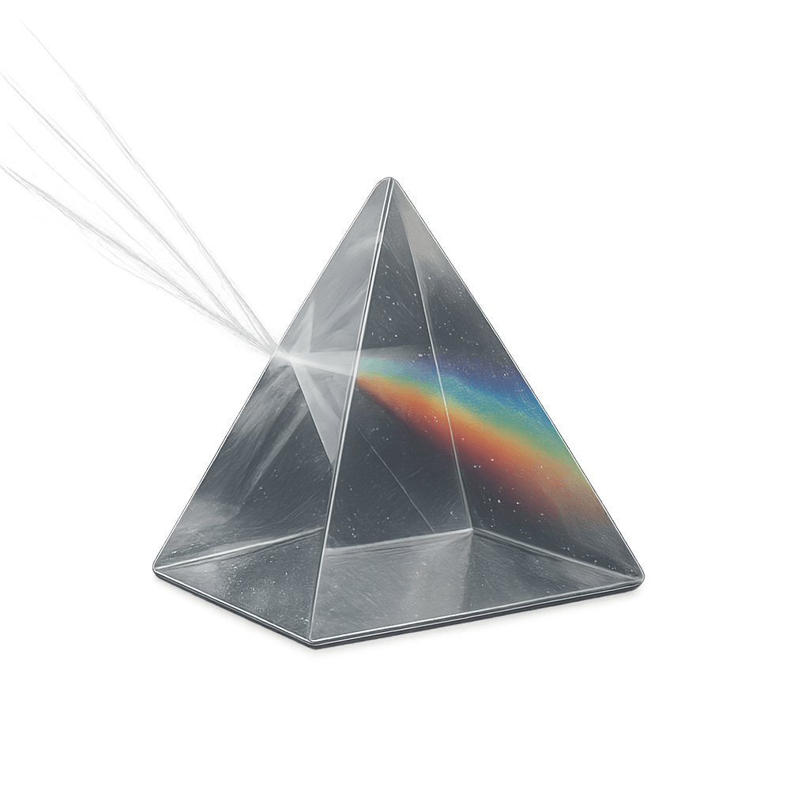
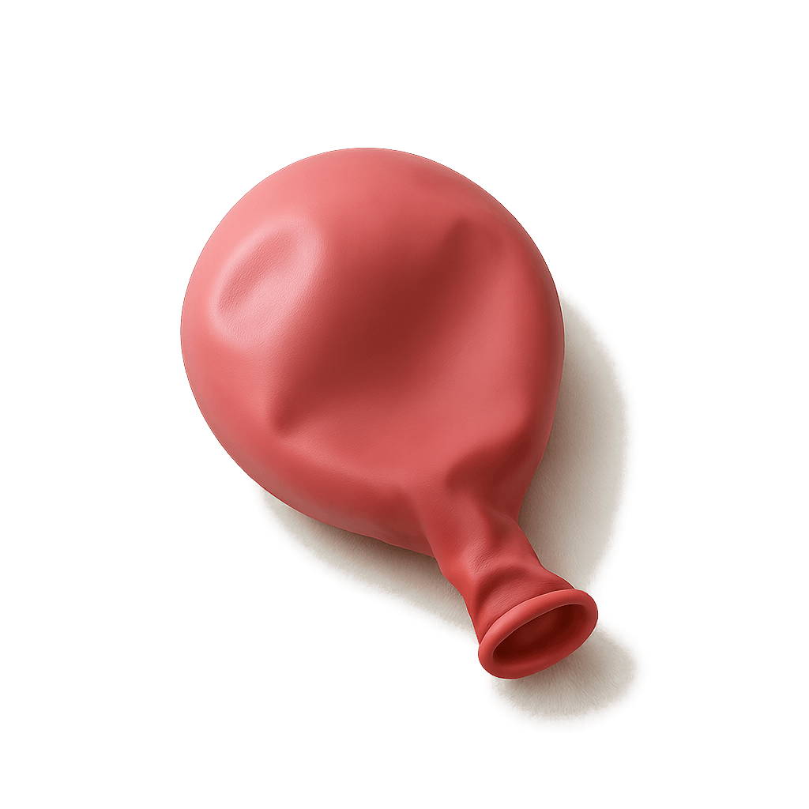

Build.
Raise.
Grow.
We help startups, scaleups, and tech-enabled SMEs with product innovation, capital raising, and AI implementation, and turn it into growth.
Book a Call
WHAT WE DO
We work with post-seed startups, scaleups, and tech-enabled SMEs that have outgrown the early hustle but aren't ready—or don't want—to hire a full internal strategy team.
You've built something that works. But now you're facing new challenges: flatlining growth, messy expansion, or an investor story that doesn't quite land. At this stage, clarity, execution, and structure matter more than speed alone.
Common challenges we help solve
-
GROWTH BOTTLENECKS
Struggling to scale or expand into new markets
-
GO-TO-MARKET CONFUSION
No clear plan across teams or markets
-

WEAK INVESTOR NARRATIVE
Decks, models, and KPIs don't reflect ambition
-
PRODUCT PROBLEMS
Products don’t drive growth, updates are slow or buggy
-
NO INTERNAL BANDWIDTH
Founders still own product, sales, and ops
WHAT WE OFFER
Go-to-Market & Expansion:
Define ICP, prioritise segments, localise messaging, launch with GTM playbooks
Fundraising Readiness:
Refine pitch, deck, and model. Prepare for demo day. Metrics-driven storytelling
Product & Product Operations:
Define vision, improve delivery, build teams, ship faster with fewer bugs
Growth Engine & Acquisition:
Build growth loops, onboarding flows, outbound systems, and analytics
AI Strategy & Workflow Automation:
Find automation opportunities, prototype copilots, run high-impact pilots
OUR EXPERIENCE
We've launched and scaled products at Amazon and Shopify
We’ve raised capital and built investor narratives for EU startups
We’ve led market expansion and organisational change from Spain to the UK
Companies We've Worked With
WHO WE ARE
"Built by operators, not career consultants."
Mike Tucci
Former Amazon and Shopify product leader.
Thomas Trincado
Strategy founder, raised capital, led startups to 8-figure revenue.
Enric Gallofré
Purplecare founder, healthcare ops and service design specialist.
CONTACT
Tell us what you're trying to solve.
Book a Free Strategy CallEmail: odysi.studio@gmail.com